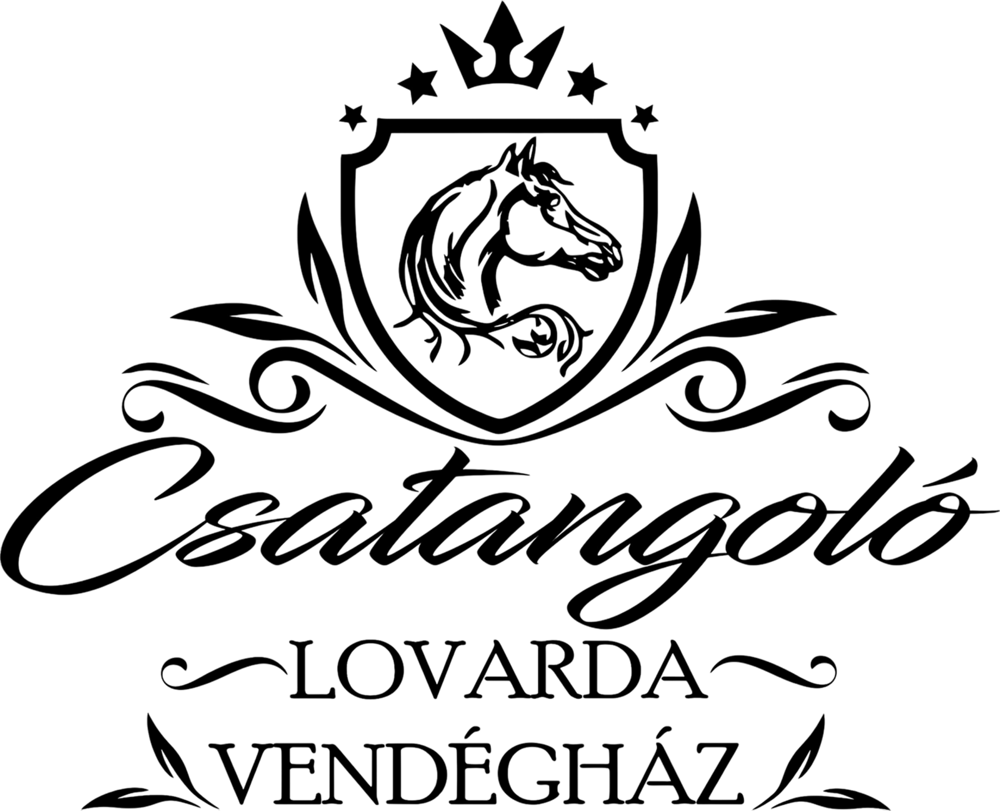

Csatangoló Lovarda
Ahol jó kezekben van ló és lovasa
Öregcsertőn, Kalocsától mindössze 8 km-re, csendes és természetközeli környezetben várjuk a lovaglás szerelmeseit, a családokat és mindazokat, akik szeretnének közelebb kerülni a lovak világához.

Nyugalom • lovak • közösség Egész éves lovas élmények kezdőknek, haladóknak és családoknak.
Bemutatkozás
Családias lovarda Bács-Kiskun megye szívében
A Csatangoló Lovarda olyan hely, ahol a lovaglás nemcsak sport, hanem élmény, kapcsolódás és feltöltődés is. A kezdők biztonságos alapoktól indulhatnak, a haladó lovasok pedig változatos lehetőségek között fejlődhetnek tovább.
A 2025-ben épült fedeles lovarda lehetőséget ad arra, hogy az oktatás és a programok időjárástól függetlenül is megvalósuljanak. A természetközeli környezet, a gondozott lovas infrastruktúra és a barátságos légkör együtt adják a Csatangoló élményt.
25 év tapasztalat
Minőségi lófelszerelés
Erős, egészséges lóállomány
Kiváló csapat
Szolgáltatásaink
Amit nálunk megtalálsz
A lényeg, hogy minden korosztály találjon nálunk biztonságos, szerethető és emlékezetes lovas élményt.
🐴
Lovasoktatás
Futószáras oktatás, egyéni edzés és osztálylovaglás kezdőknek és haladóknak.
🌳
Tereplovaglás
Vezetett lovas élmények Öregcsertő nyugodt, természetközeli környezetében.
🏕️
Táborok
Jó hangulatú, színes lovastáborok, ahol a lovaglás mellett közösségi élmény is vár.
💛
Fejlesztés
Mozgás- és képességfejlesztés lóháton, türelemmel és odafigyeléssel.
🏡
Bértartás
Gondoskodó környezet, figyelmes ellátás és lovasbarát mindennapok.
☕
Közösségi tér
Lovas büfé, családi programok és barátságos találkozási pont a lovardában.
Infrastruktúra
A lovarda mindennapi működését támogató adottságok
A pályák, karámok, legelők és a fedeles lovarda mind azt szolgálják, hogy a lovak és lovasok biztonságos, rendezett környezetben fejlődhessenek.


Szeretettel várunk
Ismerd meg a Csatangoló Lovardát személyesen is
Akár most ismerkedsz a lovaglással, akár régi lovas vagy, nálunk a cél ugyanaz: biztonságos, élménydús és szerethető kapcsolatot építeni ló és lovasa között.